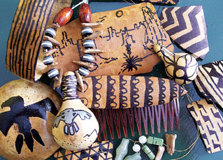

There are so many things that can be done with dried gourds! It’s an art category all its own. Wearable art - pins, combs, pendants and bracelets - all can be easily made from hard-shelled gourds. Gourds can be decorated using dyes, paints, polishes, waxes, pyrography, carving and permanent markers.
A few simple tools are required:
The tiny “jewelry” gourd, also known as the Tennessee spinning gourd, is ideal for pendants. (To find these seeds, use the Seed and Plant Finder. - Mother) This variety of gourd grows rampantly and produces dozens of gourds per plant.
Once harvested, set the little gourds aside for several months until they lose their green color and dry to a nice tan shade. Squeeze the gourd firmly to make sure it is hard and dry. Then decorate the gourd with dyes, paints, wood burner, etc., and apply a coat of protective finish.
To make a necklace: When dry, use a small drill bit to drill right through the neck of the little gourd so there is an “in” hole and an “out” hole. Guide your cord through these holes. String your choice of beads onto the cord, alternating with the decorated gourds. Gourd seeds also can add a whimsical touch to your project - simply drill holes through them and string the seeds among the beads.
Tie the two ends of the cord together in a square knot, or attach a jump ring and adjust it to the proper length. Earrings also can be made using the tiniest of these gourds.
To make a bracelet: use a longer, thinner gourd, such as a snake gourd or the rounded top of a bottle gourd. Slice neat ring sections using a saw or other cutting tool. Make sure the slices fit over your hand onto your wrist. Sand the edges smooth. Using a wood burner, brand creative designs around the piece. Apply a couple of thin layers of gloss over the bracelet to give it some sparkle. Paint the interior with black paint, or glue in a cut-to-fit piece of felt, suede or leather.
To discover much more about gourd art, read Gorgeous Gourds. - Mother
|
 BIZ REYNOLDS You can create beautiful and unique jewelry by decorating dried gourds. |
|
|